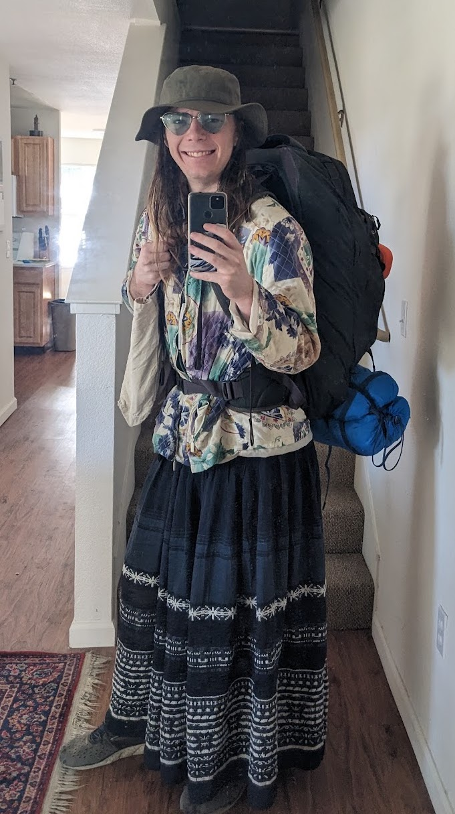

Felix Moses

Howdy friend! I'm Felix (aka Zed, aka Pigeon) a research engineer, EMT, and community organizer with a passion for interesting people, fig jam, reading, puzzles, travel, democracy, dancing, the color teal, and making the world a better place.
I grew up and live in Berkeley, and but have also spent time in San Francisco, Bethesda, Denver, Davis and Paris.
My current quest is surviving the next ~5 years.
Github, Resume, LinkedIn, Calendar
Writings
Against Compute ReallocationAn analysis of the trade off between Compute Reallocation & Compute Caps as a strategy for pacing the speed of AI development.
Work Experience
2025 - 2026Chief Technical Officer at Entrelacs (Paris, France)
Founding member at Entrelacs, an AI psychometrics startup working to get better insights on how the modern world is affecting people. Worked on LLM system design, leadership, research and general software infrastructure & engineering.
2023 - 2024AI Developer at Claim Manager (Remote)
Worked on AI Projects for home insurance claim management software.
2022 - 2024Community Coordinator at Davis Night Market (Davis, CA)
One of the most active volunteers at the organization and heavily involved in leadership. We reduce food waste and insecurity by collecting food from restaurants and grocery stores that would be thrown away and give it out for free.
2021 - 2023Lead Mobile Developer at Motili (Denver, CO)
Primary developer responsible for mobile app enabling HVAC contractors to find, schedule, complete and bill for HVAC installs. All features had to work offline and on antique phones.
2019 - 2020Intern at Apprendre Sans Frontières (Berkeley, CA)
Helped create a Raspberry Pi powered kit that was sent to schools in remote areas of Senegal without internet access to help students learn.
2018 - 2020Controls Lead of FRC Team 5419 (Berkeley, CA)
Worked on autonomous scoring routines, and remote control of the robot. Helped new member learn how to code and be part of the team.